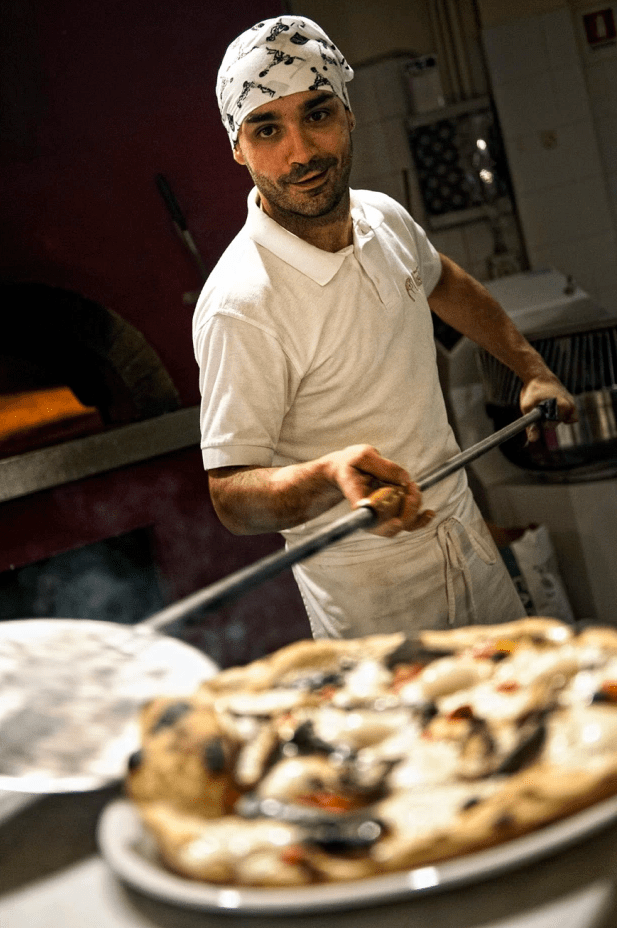

La nostra storia
Stefano Morini e Antonio De Iure, sull’onda del rilancio del Quartiere Guasco di Ancona, insieme nel progetto Matas 54, fanno rivivere un locale storico che nel tempo ha avuto diverse destinazioni, dall’antica “Ciancianella”, ritrovo dei giovani anconetani degli anni ’70, alla “Pizzeria Jasmine”. Matas 54 riflette la visione comune di Stefano e Antonio, frutto delle loro diverse e complementari esperienze di vita e oggi propone “Pizza & Taglieri”.
Stefano, con la passione per il suo lavoro e la professionalità acquisita negli anni attraverso la gestione di locali di successo come l’ “Osteria del tempo perso” a Senigallia, “Via Giannelli 3” e oggi il “Caffè Guasco”, porta la sua competenza nella selezione di prodotti di alta qualità che propone in un ambiente caldo e accogliente, dal tono informale e familiare che invita alla convivialità.
Antonio, che nell’ambito di un business di produzione artigianale di carne e salumi ha acquisito la sua esperienza nel settore e ne ha fatto la passione di una vita, a cui ritorna dopo un percorso professionale internazionale nel settore finanziario, porta al Matas 54 le nuove tendenze del fooding.
Enzo Ercole, terza generazione di pizzaioli, cresciuto a Senigallia, a fianco del padre al “Vicoletto da Michele”, formatosi sul modello che fonde ricerca e tradizione, arricchito poi da esperienze all’estero e dalla creatività personale, propone una pizza che attraverso l’uso di ingredienti di alta qualità, farine di produzione locale e una lunga lievitazione, è in grado di interpretare e soddisfare le nuove esigenze di giovani e meno giovani. Grazie alla collaborazione con lo studio di Architettura Sardellini Marasca e dell’impegno e competenza del suo team, Matas 54, senza snaturare lo stile e l’atmosfera dell’antico palazzo di cui fa parte, ha assunto, attraverso i colori, i materiali e le luci, l’aspetto di un locale nuovo e contemporaneo. Dalla primavera all’autunno Matas 54 si apre sulla piazza San Francesco, ai piedi del maestoso portale della Chiesa che la sovrasta.
Dalla primavera all'autunno Matas 54 si apre sulla Piazza San Francesco, sotto le stelle e ai piedi del maestoso portale della chiesa che la sovrasta.